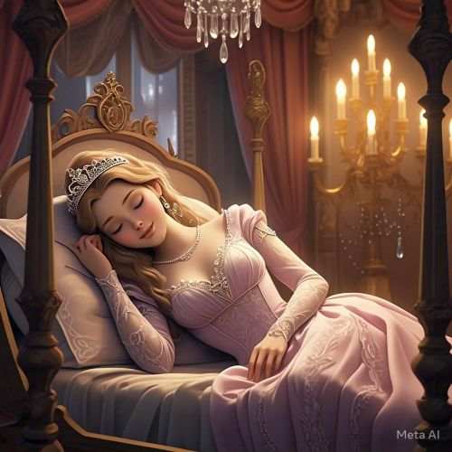

Uma história interativa para você explorar e decidir o destino da princesa Aurora.
Em um reino encantado, havia uma linda princesa chamada Aurora. Quando nasceu, o rei e a rainha organizaram uma grande festa para celebrar sua chegada ao mundo. Todos os moradores do reino foram convidados, e até as fadas boas compareceram para abençoar a princesa.
No entanto, uma fada malvada, chamada Malévola, não foi convidada. Ofendida, ela apareceu na festa e lançou uma terrível maldição sobre a princesa: "No dia de seu 16º aniversário, Aurora irá espetar seu dedo em um fuso e cairá em um sono profundo, do qual nunca acordará, a menos que um príncipe a beije."
As boas fadas, tentando reverter a maldição, alteraram o feitiço. Elas não podiam impedir que Aurora caísse no sono, mas prometeram que ela acordaria, não por um beijo qualquer, mas por um verdadeiro ato de amor.
A princesa Aurora cresceu cercada de amor e carinho, mas sem saber da maldição que pairava sobre ela. Quando completou 16 anos, ela estava ansiosa para explorar o castelo e seus arredores. Durante suas aventuras, ela encontrou uma sala secreta onde um fuso estava guardado, sem saber do perigo que ele representava...
Ao tocar o fuso, Aurora imediatamente caiu em um sono profundo, como a maldição havia previsto. O castelo foi envolto por um manto de silêncio, e todos os habitantes do reino também caíram em um sono mágico. O rei e a rainha estavam desolados, mas as boas fadas mantiveram a esperança viva de que a princesa um dia seria despertada por um ato de amor verdadeiro.